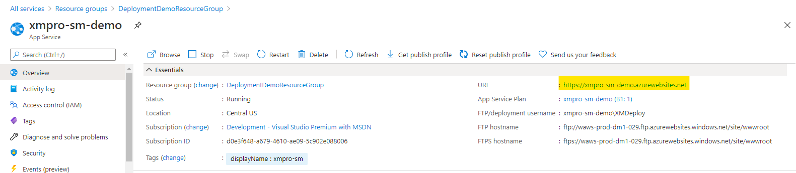

Number Selector
In scenarios where the user should select a number, the Number Selector is an input field that gives the user the option to do so. When the user enters a value, the field automatically makes sure the value entered is a number.
Note
Some images in this document may be missing and need to be migrated from the original GitBook documentation.
Important
Number Selector automatically converts the entered value into a scientific notation if it is greater than 21 digits for an integer value and greater than 6 digits for a decimal value.
Number Selector Properties
Appearance
Common Properties
The Number Selector has the option to change its visibility, styling mode, set a placeholder, show tooltips, and show clear button.
See the Common Properties article for more details on common appearance properties.
An option that is specific to Number Selector is Show Spin Buttons.
Style

Show Clear Button
The clear button will appear on the right side. Clicking the button will remove the value from the control.

Show Spin Buttons
The up and down buttons will be shown on the right side of the control which the user can use to increase or decrease the current value.

Behavior
Common Properties
The Number Selector has the option to set the option for read-only and disabled.
See the Common Properties article for more details on common behavior properties.
Options that are specific to Number Selector are min, max, format.
Min and Max
Affects the minimum and maximum values that Number Selector can accept.
Format
This will format the value to the format that was specified. In the example below, it will show it as a currency.
Read Only and Disabled
This affects whether or not the Number Selector value can be changed and if it can only be read and not manipulated.

Value
The Number Selector accepts numbers only. The value can be static, dynamic, or an expression.
See the Common Properties article for more details on common value properties.

Validation
Common Properties
Properties that are common to most Blocks include: validation Group, required, pattern, and message;
See the Common Properties article for more details on common validation properties.
Action
Common Properties
Properties that are common to most Blocks include: Navigate To and Show Confirmation Dialog;
See the Common Properties article for more details on common action properties.
Last modified: May 29, 2025